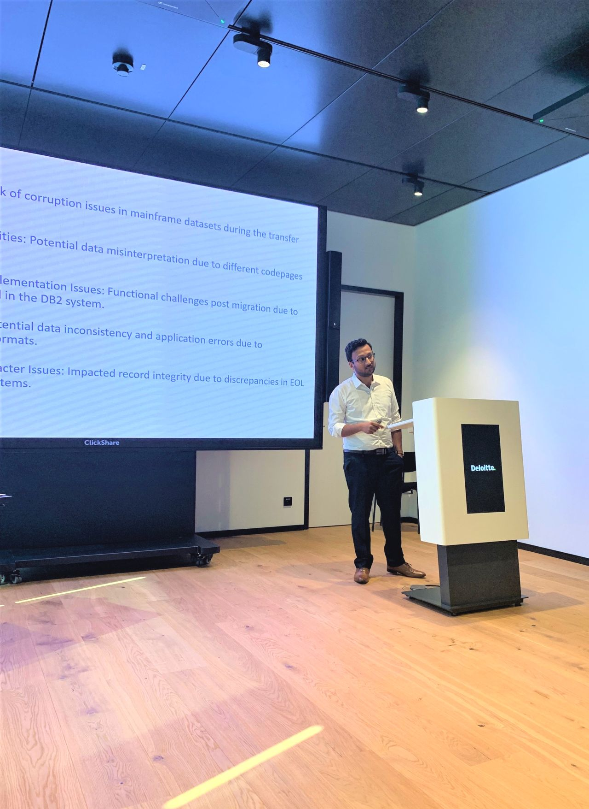
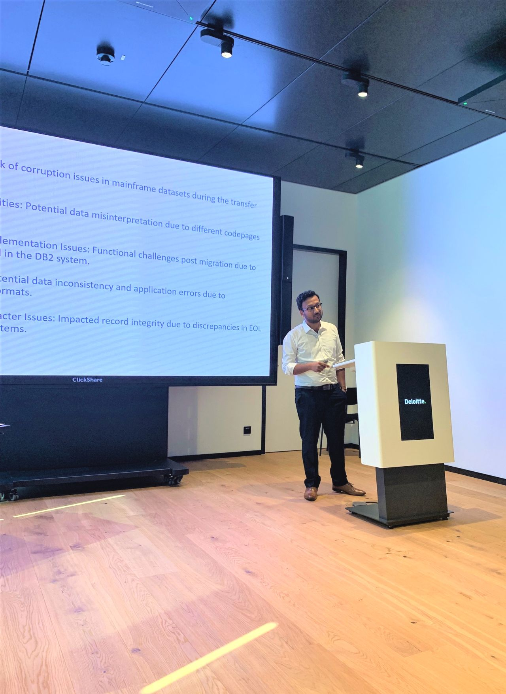
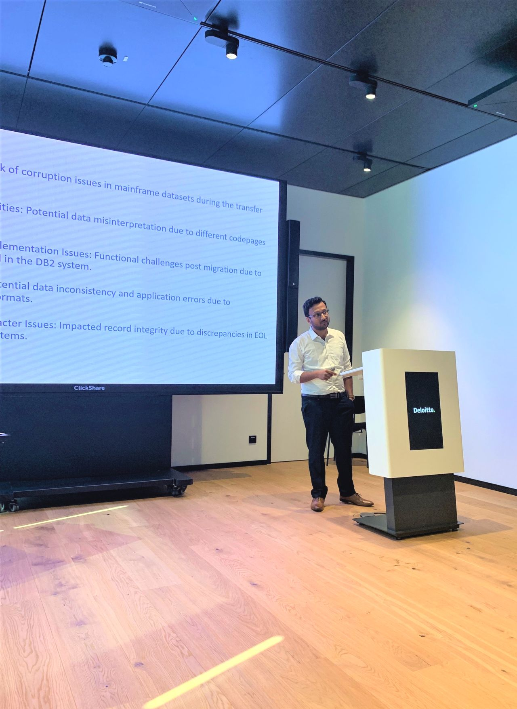
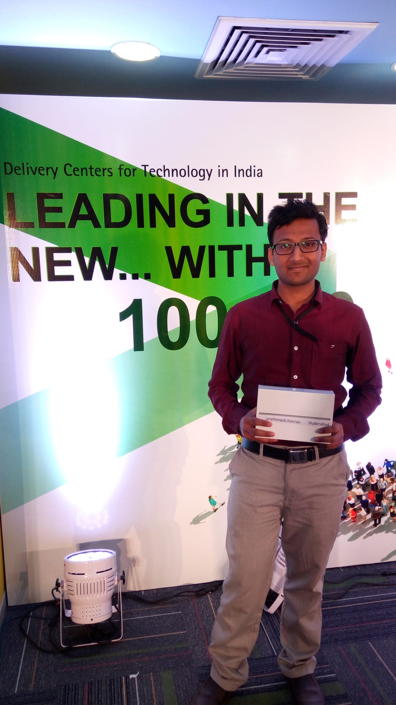
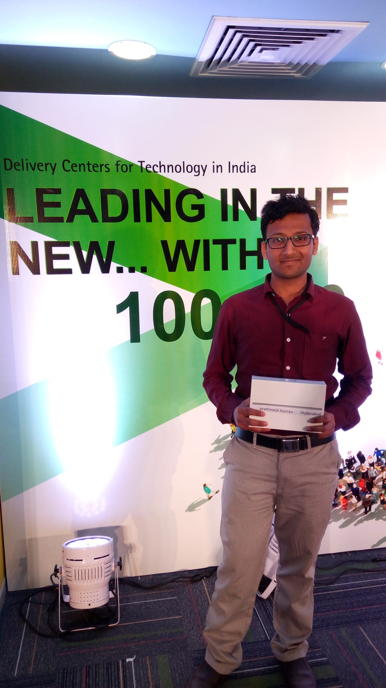

2021 - present

Senior Consultant at Deloitte (Germany, hybrid).
 

- Automated Mainframe (DB2/VSAM) → Oracle migration (~80% cost reduction)
- COBOL → Java modernization PoCs (Innowake) for automotive & insurance clients
- Phased mainframe exit strategies; discovery/mining → detailed roadmaps & RFPs



 
